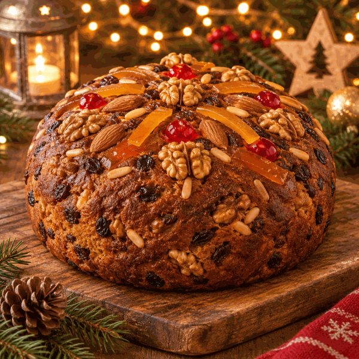

Alle Rezepte › Trento
Stadt der Reise: Trento
Zelten trentino
Der Zelten ist DER Weihnachtskuchen des Trentino: der Name kommt vom deutschen „selten“, weil er früher nur zu besonderen Anlässen gebacken wurde.
Portionen8
Vorbereitung40 Min.
Garzeit30 Min.
Ruhezeit8 Std.
SchwierigkeitMittel
Allergene: Gluten, Schalenfrüchte, Eier, Milch

Auf Pinterest merkenZutaten
- Rosinen · 75 g
- Getrocknete Feigen · 125 g
- Kandierte Früchte (Zitronat und Orangeat) · 50 g
- Walnüsse · 75 g
- Mandeln · 50 g
- Pinienkerne · 50 g
- Milch · 200 ml
- Rum · 1 Glas
- Mehl · 250 g
- Weiche Butter · 75 g
- Zucker · 75 g
- Eier · 2
- Backpulver · 1 Päckchen
- Zimt und Vanille · nach Geschmack
Schritt für Schritt
- Am Vorabend Rosinen, Feigen und kandierte Früchte in der Milch mit dem Rum einweichen.
- Eier, weiche Butter, eine Prise Salz, Mehl, Gewürze und Backpulver dazugeben: der Teig soll weich bleiben.
- In eine gefettete Form füllen, mit Eiweiß bestreichen und nach Belieben mit Walnüssen, Mandeln und kandierten Früchten verzieren.
- Im vorgeheizten Ofen bei 175 °C backen.
Der Tipp des Kochs. Jede Trentiner Familie hat ihre eigene Variante: probier Roggenmehl, oder weiche die Früchte in Grappa ein.
Koche dieses Rezept auch in Tavolata
Im Spiel kombinierst du Zutaten, erfüllst Bestellungen und restaurierst italienische Städte, von Firenze bis Milano. Kostenlos, mit echten Rezepten im Rezeptbuch.
Im App Store laden